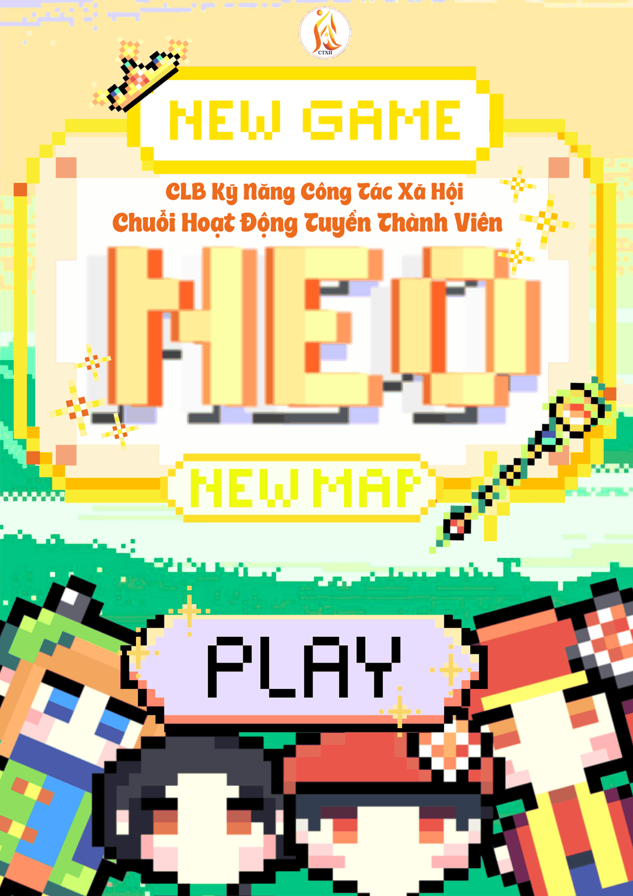

Đang kiểm tra...
VÒNG 1: ĐIỀN BIỂU MẪU
Chia sẻ thông tin cá nhân, mục tiêu và nguyện vọng bằng sự chân thành, mạch lạc.
"Thấu cảm để sẻ chia – Rèn kỹ năng để trưởng thành. Hãy trở thành một trong 35 mảnh ghép thế hệ mới của đại gia đình CLB Kỹ năng Công tác xã hội!"

Trực thuộc Đoàn khoa Công tác xã hội - Nhân học - Xã hội học (Trường ĐH KHXH&NV, ĐHQG-HCM), CLB Kỹ năng Công tác xã hội (CLB KN CTXH) ra đời như một "phòng thí nghiệm thực tiễn" giúp sinh viên gắn kết lý thuyết giảng đường với kỹ năng làm việc cùng con người và cộng đồng. Bước sang năm học 2026 – 2027 với sức mạnh giao thoa liên ngành, CLB mở rộng cánh cửa chào đón toàn thể sinh viên Nhân văn có chung đam mê phụng sự xã hội.
Bạn hãy bỏ các ảnh giới thiệu vào thư mục assets/gioi-thieu/ (đặt tên anh-1.jpg, anh-2.jpg... hoặc khai báo trong js/config.js) để hiển thị tại đây.
Chia sẻ thông tin cá nhân, mục tiêu và nguyện vọng bằng sự chân thành, mạch lạc.
Trò chuyện trực tiếp cùng Ban Giám khảo để làm rõ cá tính và mức độ phù hợp.
Phối hợp giữa 4 ban để lập kế hoạch thực tế cho chương trình giả định "Trung thu yêu thương".
"Nếu bạn có bất kỳ thắc mắc nào liên quan đến chương trình Tuyển thành viên lần này, đừng ngại ngần mà hãy liên hệ với Fanpage CLB nhé!"
Đặt câu hỏiHoàn toàn có nhé! CLB Kỹ năng Công tác xã hội không đặt nặng việc bạn phải có thật nhiều kinh nghiệm hay một chiếc hồ sơ hoạt động dày đặc từ trước. Ở các vòng tuyển chọn, Ban Giám khảo đánh giá cao nhất là thái độ cầu thị, sự nhiệt huyết, tinh thần trách nhiệm và sự chân thành của bạn. CLB chính là môi trường để bạn rèn luyện và phát triển; chỉ cần bạn sẵn sàng bước ra khỏi vùng an toàn, các anh chị đi trước và Ban Thành viên & Phát triển năng lực sẽ luôn đồng hành, tập huấn cho bạn từ những bước cơ bản nhất.
Chắc chắn là có! Dù mỗi thành viên đều thuộc một ban chuyên môn cố định, nhưng mọi chương trình học thuật và dự án cộng đồng của CLB đều cần sự phối hợp chặt chẽ giữa cả 04 ban (Tổ chức chương trình, Thành viên & Phát triển năng lực, Kết nối nguồn lực, Truyền thông). Bên cạnh đó, CLB thường xuyên tổ chức các buổi tập huấn kỹ năng chung cho toàn thể thành viên, và bạn hoàn toàn có thể đăng ký tham gia hỗ trợ chéo các mảng công việc khác trong từng chiến dịch để thử sức và khám phá đa dạng năng lực của bản thân.
Không chỉ dừng lại ở việc chạy sự kiện hay thực hiện các dự án cộng đồng, CLB KN CTXH còn là một "gia đình nhỏ" mang đến cho bạn những trải nghiệm thanh xuân đáng nhớ:
Khi trở thành mảnh ghép của CLB KN CTXH, bạn sẽ được rèn luyện song song cả kỹ năng thực hành Công tác xã hội lẫn bộ kỹ năng mềm thiết yếu: